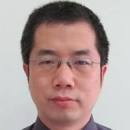
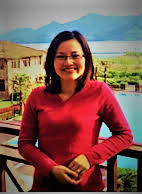
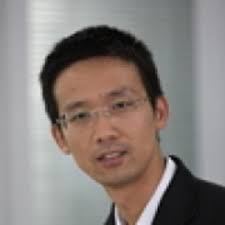
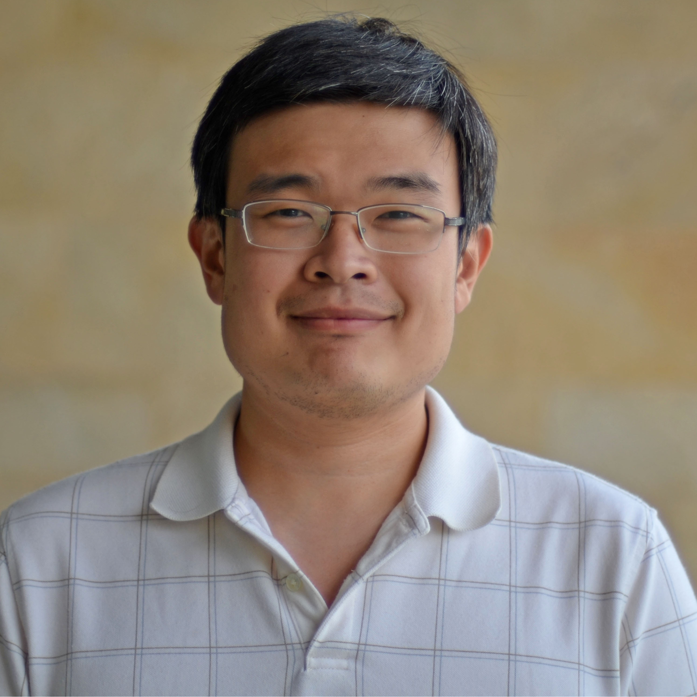
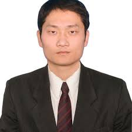
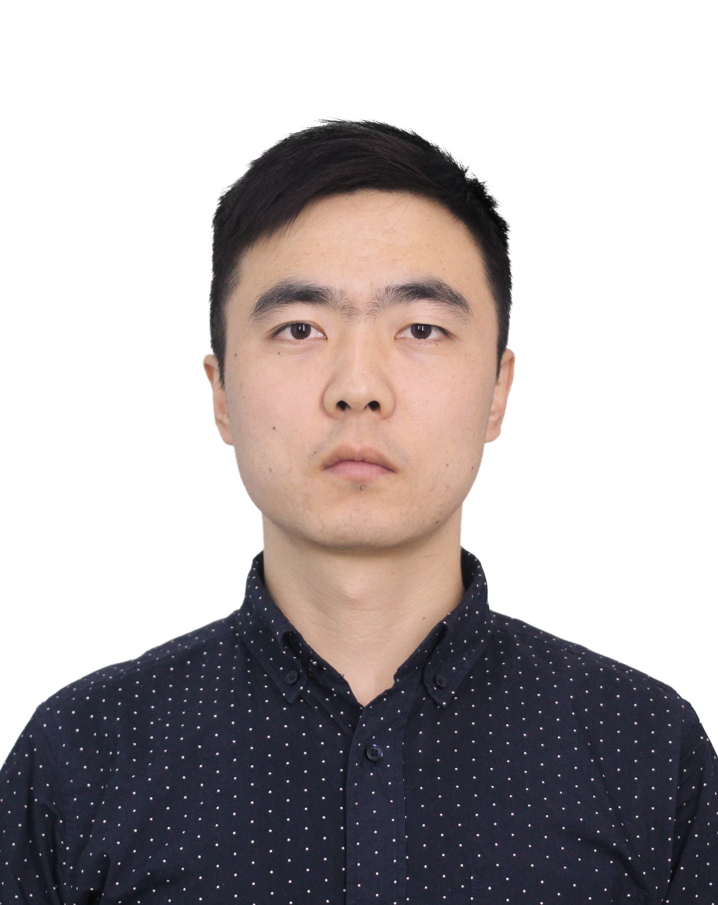

Faculty Advisors: A broad and interdisciplinary group of Faculties are the guarantee of proper guidance in research activities within User-Centric Computing Group. We emphasize the importance of advising and mentoring, as well as external collaborations (e.g. visiting, internships and etc.), to expand the vision of our group and deepen the understanding of relevant concepts and techniques. Also, all faculty advisors appreciate and share the values of User-Centric Computing Group and help students as much as they could.
Disclaimer for Students: All internal and external faculty advisors manages and led their own research groups, and User-Centric Computing Group doesn't position itself as an independent research group but a student organization for regular seminars, training projects and brainstorms/discussions. Hence, it's not necessary to involve irrelevant group members while doing your own research/submitting your own papers, but collaborations have been highly encouraged of course.
Internal Faculty Advisors |
We are honored and extremely fortunate to have the following faculty advisors on campus, who are interested in working with our students (listed alphabetedly):
Prof. Dr. Jianfeng Ren, School of Computer Science
| Jianfeng earned his PhD in Electrical Engineering and MSc in Signal Processing from Nanyang Technology University, advised by Prof. Dr. Xudong Jiang and Prof. Dr. Junsong Yuan, and BSc in Communications from National University of Singapore. In December 2007, he joined NTU as a Project Officer, responsible for the development of the face verification system on mobile devices. In September 2011, he joined the BeingThere Centre, Institute of Media Innovation, NTU, as a Research Associate. In 2015-2018, he worked as a Postdoctoral Research Fellow in the School of Electrical and Electronic Engineering, NTU. Currently, he is an assistant professor in the School of Computer Science in University of Nottingham Ningbo China. Since 2009, he has authored or coauthored 10 journal papers and 10 conference papers, including two TIP papers, three PR papers, three SPL papers, and one TMM paper. His research interests include face recognition, image/video processing, statistical pattern recognition, deep learning, human-computer interaction and radar target recognition. |
 (Contact Jianfeng) |
Prof. Dr. Xu Sun, Department of Product Design and Manufacture
| Xu earned her PhD in Human-Computer Interaction from University of Loughborough and MSc in Information Technology from University of Twente. She is a Chartered Technological Product Designer of the Institute of Engineering Designers (iED, UK). She has worked on a number of design projects at various universities (e.g. University of Nottingham, Leicester University, Loughborough University) as well as with a number of industrial Companies (e.g. Philips, Shell, Océ). Dr. Sun brings over 10 years’ experience in design led research through which her work has developed interaction and interfaces which operate between physical and digital spaces. She has worked on a number of international, national (NSFC), municipal projects and industrial projects in the fields of serendipitous information seeking, information search engine, intellectual property rights in design, digital adaptive educational game, creative computer supported cooperative work, transportation design, cultural patterns in product design, and sustainable product design |
 (Contact Xu) |
Prof. Dr. Qingfeng Wang, Faculty of Economics
|
Qingfeng earned his BSc degree in Econometric and Operational Research from Maastricht University, both a MSc degree in Financial Mathematics (with distinction) and a Ph.D. degree in Mathematics from the University of Loughborough. He worked as a teaching fellow at NUBS between 2011 and 2016.
He is a member of the Royal Society of Economics, American Economic Association, and Society of Labor Economist. He has a broad interest in population economics, labor economics, corporate governance, intellectual property rights, and Confucian ethics. View his most updated publications on my Google Scholar page here . |
 (Contact Qingfeng) |
External Faculty Advisors
We are honored and extremely fortunate to have the following faculty advisors outside the campus, who are interested in working with our students (listed alphabetedly):
Dr. Rachata Ausavarungnirun, Lecturer@TGGS, KMUTNB
|
Rachata earned his PhD and MSc in Electrical and Computer Engineering from Carnegie Mellon University, advised by Prof. Dr. Onur Mutlu, and BSc in both Computer Science and Electrical Computer Engineering from Carnegie Mellon University. He is currently leading Architecture Research Group@TGGS. His research interests span multiple areas including GPU architectures, management of GPUs in the cloud, virtual memory, heterogeneous CPU-GPU architectures, memory subsystems, persistent memory, accelerator designs for bioinformatic applications and network-on-chip.
His work has appeared in many top computer architecture venues across ISCA, MICRO, ASPLOS and HPCA, and has led KMUTNB to be among the top institution in Asia for Computer Architecture research based on CSranking.org. He is looking for talented students, especially with interests in Computer Systems and Architecture. More details could be found in his homepage. |
 (Contact Rachata) |
Prof. Dr. Chunye Gong, Associate Professor@National University of Defense Technology
|
Chunye earned his PhD, MSc and BSc in Computer Science and Applied Mathematics from National University of Defense Technology. His research interests lie on High Performance Computing (HPC), Parallel Algorithms and Numerical Methods. He is particularly excited about Computational Mathematics and Physics. He is the team leader of Tianhe Application Group, where he brings ten-year expertise in the area of HPC. He is currently open for Machine Learning/Computer Vision-related research collaobrations, systems prototyping and HPC-enhanced designs. For more details about his research, please refer to his ResearchGate homepage. |
 (Contact Chunye) |
Prof. Dr. Yaohua Wang, Associat Professor@National University of Defense Technology
|
Yaohua earned his PhD, MSc and BSc from National University of Defense Technology (NUDT) in Computer Engineering, advised by Prof. Dr. Shuming Chen, who is the leader of the High Performance Microprocessor Innovation Group in Chinese Ministry of Education. Before that, he was a postdoctoral researcher, led by Prof. Dr. Onur Mutlu, in SAFARI Research Group, Department of Computer Science, ETH Zurich. His work has appeared in top venues in Computer Architecture like ISCA, MICRO and HPCA. He receives Best Paper Award from Computer Architecture Letters in 2013. His current research interests lie on Parallel Architectures, Memory Systems and Machine Learning. In addition, he is currently developing a team of Domain-Specific Designs for IoT and Embedded Systems, based on RISC-V. For more details about his research, please refer to his ResearchGate homepage. |
 (Contact Yaohua) |
Prof. Dr. Xu Zhou, Assistant Professor@National University of Defense Technology
|
Xu earned his PhD, MSc and BSc in Computer Science from National University of Defense Technology. His research interests lie on Operating Systems, System Security and Computer Networks. He is currently working on Computer Security as the central focus. He and his students have made several outstanding contributions in the system domain, which has appeared in top venues like PPoPP, USENIX Security and VEE. For more details about his research, please refer to his ResearchGate homepage. |
(Contact Xu) |